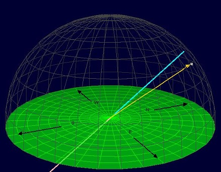

本地座標
概要
這個程式模擬星星在本地座標中的位置。水平線隨著四個主要方位延伸。觀察者位於緯度35.5度，該度數為天北極和北地平面的夾角。星星的位置可以藉由高度及方位的滑標來改變。
這模擬器是用來向學生介紹赤道座標和天球儀的模擬器系列中的一部分。 其他的模擬器可在OSP ComPADRE網頁中找到。
本地座標系統
- 顯示選項目錄
- 顯示方位箭頭: 顯示出一個次要的框架展示觀察者頭頂上所見的星空，其水平面顯示在天球結構中。
- 顯示天球軸: 顯示天球軸.
- 顯示天球赤道: 顯示出天球赤道的平面
- 可視元素
- 橘色箭頭:藉由高度及方位滑標所決定由觀察者指向點的箭頭
- 白點: 藉由高度及方位滑標所決定的星星位置
- 綠色平面: 地球上觀察者的水平面 在水平面上的物體是可見的, 水平面下的則否.
- 黑色箭頭 (及標籤): 水平面上四個主要方位的點
- 粉紅線條: 天球軸
Controls
- Altitude (deg): sets the azimuth of the star based on the observer's location. 0 degrees is on the horizon, while 90 degrees is the zenith.
- Azimuth (deg): sets the azimuth of the star based on the observer's location. 0 degrees represents N, 90 West, etc.
Mario Belloni (mabelloni@davidson.edu)
Todd K. Timberlake (ttimberlake@berry.edu)